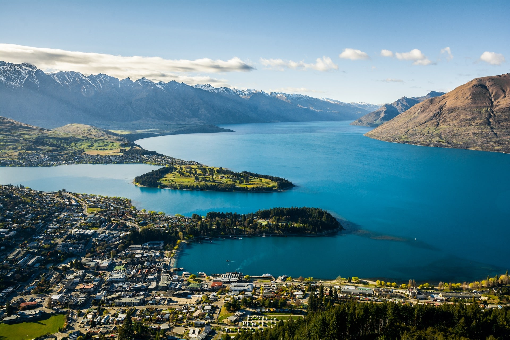
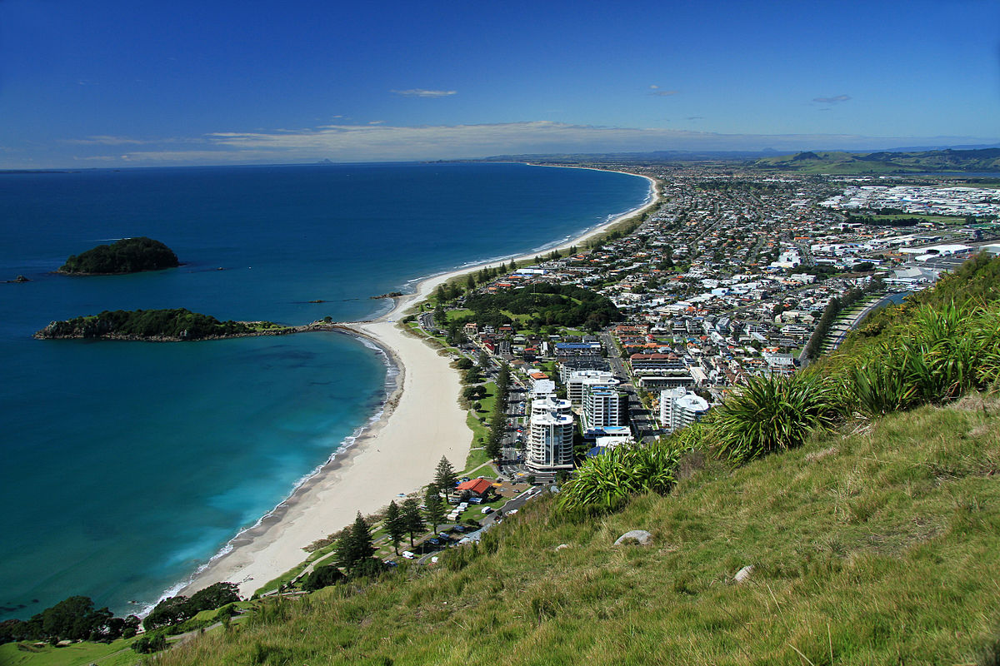
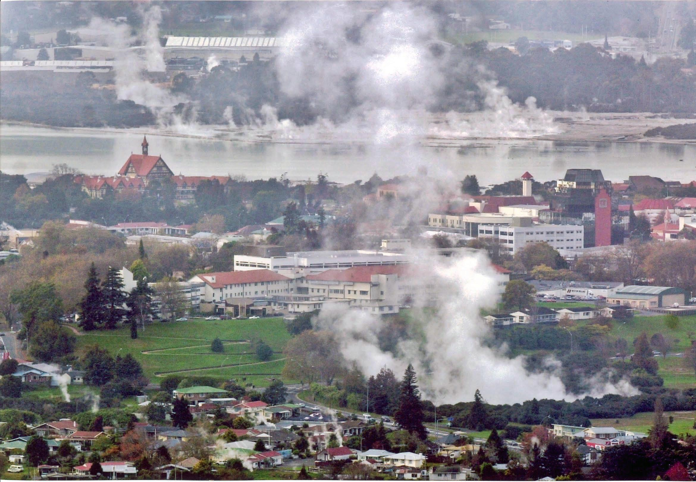
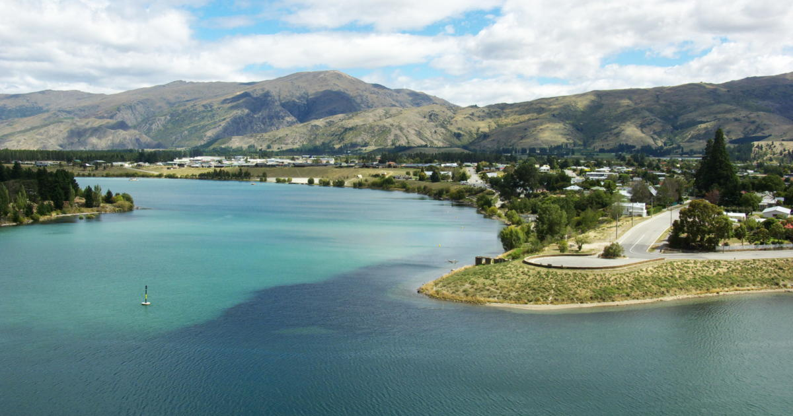
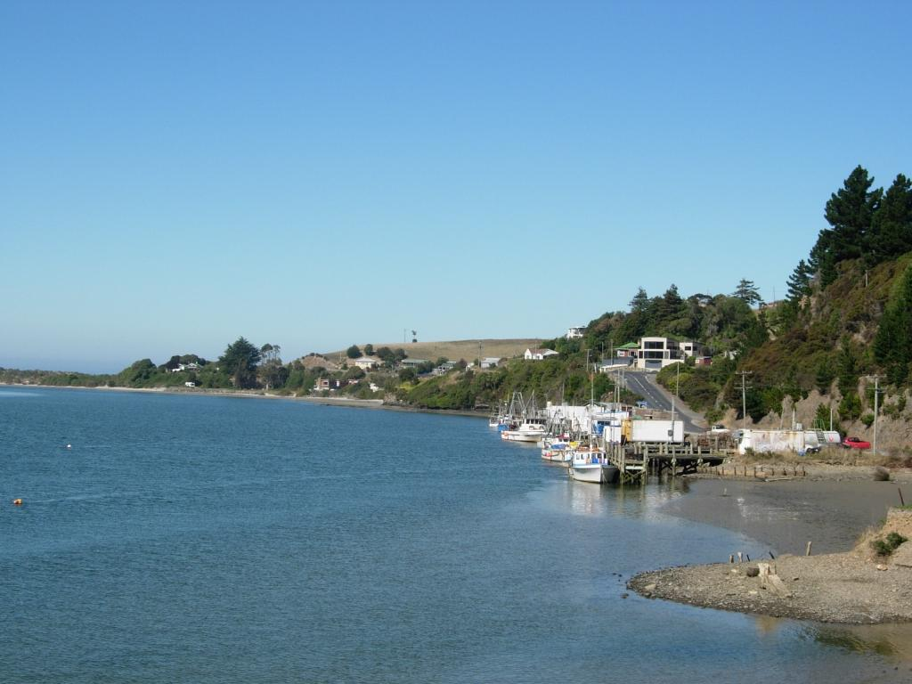
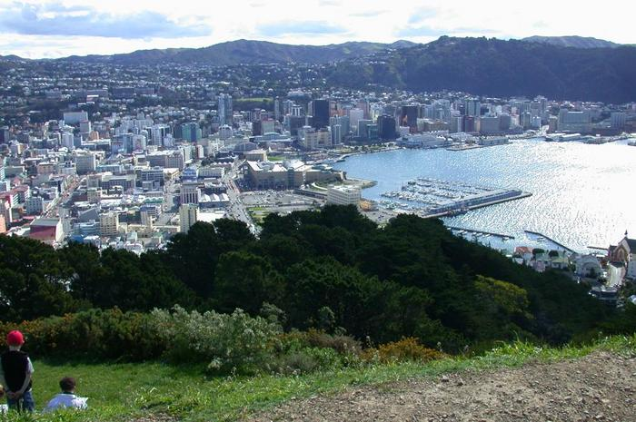
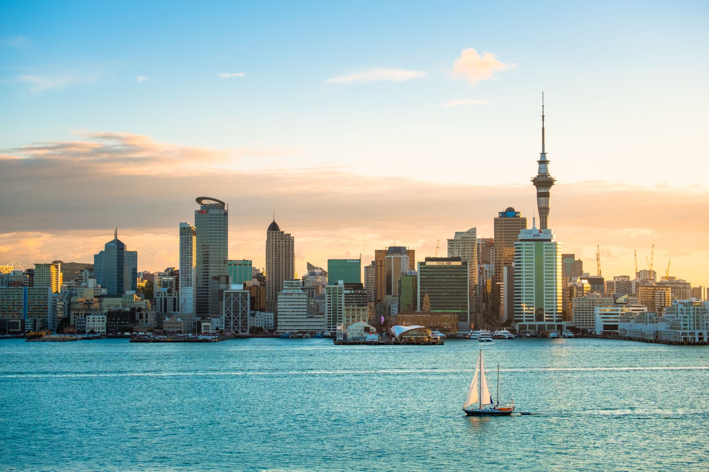

-
Hamilton
The city of Hamilton is located on the banks of the mighty Waikato River, which is best appreciated from one of the scenic riverside walks and cycleways. The visually stunning Hamilton Gardens are webbed by paths that journey through a gallery of themed gardens from grand Italy to tranquil Asia.
-

Nelson
Nelson Tasman is renowned for its stunning natural landscapes, with diverse geography capturing everything from long golden beaches to untouched forests and rugged mountains.
-

Queenstown
Queenstown sits on the shore of Lake Wakatipu among dramatic alpine ranges. It’s rumoured that gold prospectors - captivated by the majestic beauty of the surrounding mountains and rivers - gave this now cosmopolitan town its name.
-

Tauranga
Tauranga is the largest city in the Bay of Plenty and one of the fastest growing population centres in the country. Central to Auckland, Rotorua and Hamilton, and just a 15 minute drive from one of New Zealand's most popular beach towns, Mount Maunganui.
-

Rotorua
The city offers a raft of attractions and experiences for everyone from adventure-seekers to those just looking to unwind.
-

Cromwell
Located on the shores of Lake Dunstan, Cromwell has the appearance of a modern town, but its history stretches back to the gold rush days of the 1800s. This history is best experienced in 'Old Cromwell Town’, a feature attraction for visitors.
-

Taieri-Mouth
The seaside fishing village of Taieri Mouth is nestled in the folds of the South Otago coastline. It has impressive beaches, cliffs, and an island just offshore which can be walked to at low tide.
-

Wellington
Wander through hidden laneways to discover street art and follow the sculpture walks along Wellington's waterfront. Discover the stories of Aotearoa New Zealand in world-class museums and galleries – the interactive and immersive national museum, Te Papa(opens in new window), is a must-visit.
-

Auckland
You’ll find the best of both worlds in Auckland, with beautiful rainforests, parks and beaches all so close to the city centre. The Waitakere Ranges Regional Park west of the city centre has more than 250 kilometres of walking and hiking tracks through lush native rainforest.